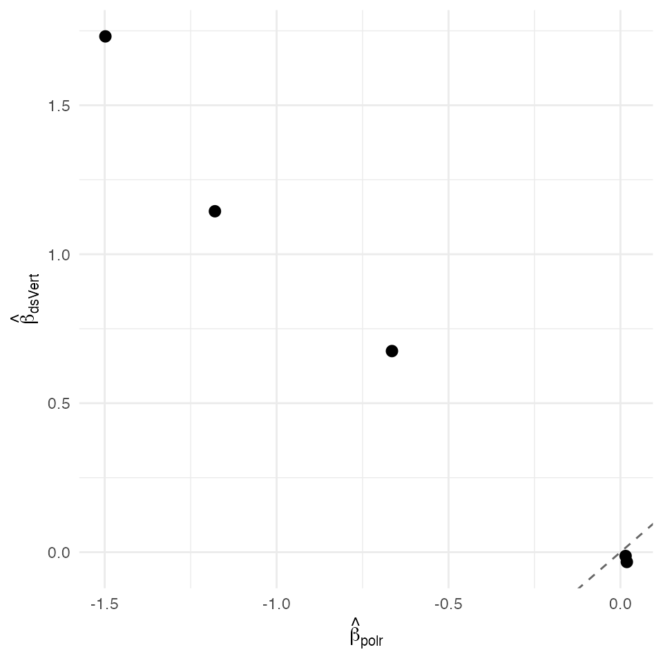

Ordinal warm — federated cumulative-binomial OVR (K = 3)
David Sarrat González, Miron Banjac, Juan R. González
2026-05-02
Source:vignettes/methods/ord_warm.Rmd
ord_warm.Rmd1. Context
The “warm” ordinal path (Rifkin & Klautau, 2004; McCullagh, 1980
§2.5) decomposes a K-class proportional-odds model into K − 1
independent cumulative-binomial fits — each row of the model matrix
predicts
for one threshold k. With K classes, the warm path runs K − 1 separate
ds.vertGLM binomial cells; the slope vector is recovered as
the precision- weighted average of the per-threshold slopes
(proportional-odds constraint).
Compared to the joint Newton path (ord_joint), the warm
path loses the closed-form cross-block Hessian
but gains compatibility with the K = 3 secure-aggregation pipeline: each
cumulative-binomial cell is just a ds.vertGLM binomial call
on a 3-server vertical split, no joint Newton block-diagonal solver
required.
Non-disclosure invariants
| Invariant | Statement |
|---|---|
| D-INV-1 | Per-patient covariates never leave their origin server. |
| D-INV-2 | Per-row never reconstructed in plaintext. |
| D-INV-3 | Per-patient cumulative indicators live only on the label server. |
| D-INV-4 | Each warm cell exchanges only aggregate score / Fisher scalars. |
| D-INV-5 | Cross-server messages signed Ed25519 against
dsvert.trusted_peers. |
Dataset and partition
The MASS birthwt dataset, ordinal-tertile target as in
ord_joint, but the design partitions across THREE
servers.
| Server | Columns | Role |
|---|---|---|
| s1 |
patient_id, age,
lwt
|
Maternal demographics |
| s2 |
patient_id, smoke,
ht, ui
|
Risk indicators |
| s3 |
patient_id, bwt_cls,
low_leq, med_leq, high_leq
|
Ordinal outcome + cumulative indicators (label) |
2. Data preparation
data("birthwt", package = "MASS")
bw <- birthwt
bw$patient_id <- sprintf("BW%03d", seq_len(nrow(bw)))
brks <- quantile(bw$bwt, c(0, 1/3, 2/3, 1), na.rm = TRUE)
bw$bwt_cls <- factor(
cut(bw$bwt, breaks = brks, include.lowest = TRUE,
labels = c("low", "med", "high")),
levels = c("low", "med", "high"), ordered = TRUE)
bw$low_leq <- as.integer(as.integer(bw$bwt_cls) <= 1L)
bw$med_leq <- as.integer(as.integer(bw$bwt_cls) <= 2L)
bw$high_leq <- 1L
pooled <- bw[, c("patient_id",
"age", "lwt", "smoke", "ht", "ui",
"bwt_cls",
"low_leq", "med_leq", "high_leq")]
head(pooled)
#> patient_id age lwt smoke ht ui bwt_cls low_leq med_leq high_leq
#> 85 BW001 19 182 0 0 1 low 1 1 1
#> 86 BW002 33 155 0 0 0 low 1 1 1
#> 87 BW003 20 105 1 0 0 low 1 1 1
#> 88 BW004 21 108 1 0 1 low 1 1 1
#> 89 BW005 18 107 1 0 1 med 0 1 1
#> 91 BW006 21 124 0 0 0 med 0 1 1
s1 <- pooled[, c("patient_id", "age", "lwt")]
s2 <- pooled[, c("patient_id", "smoke", "ht", "ui")]
s3 <- pooled[, c("patient_id", "bwt_cls",
"low_leq", "med_leq", "high_leq")]
head(s1)
#> patient_id age lwt
#> 85 BW001 19 182
#> 86 BW002 33 155
#> 87 BW003 20 105
#> 88 BW004 21 108
#> 89 BW005 18 107
#> 91 BW006 21 124
head(s2)
#> patient_id smoke ht ui
#> 85 BW001 0 0 1
#> 86 BW002 0 0 0
#> 87 BW003 1 0 0
#> 88 BW004 1 0 1
#> 89 BW005 1 0 1
#> 91 BW006 0 0 0
head(s3)
#> patient_id bwt_cls low_leq med_leq high_leq
#> 85 BW001 low 1 1 1
#> 86 BW002 low 1 1 1
#> 87 BW003 low 1 1 1
#> 88 BW004 low 1 1 1
#> 89 BW005 med 0 1 1
#> 91 BW006 med 0 1 1
dslite.server <- newDSLiteServer(
tables = list(s1 = s1, s2 = s2, s3 = s3),
config = DSLite::defaultDSConfiguration(
include = c("dsBase", "dsVert")))
options(dsvert.require_trusted_peers = FALSE,
datashield.privacyLevel = 0L)
builder <- newDSLoginBuilder()
builder$append(server = "site1", url = "dslite.server",
table = "s1", driver = "DSLiteDriver")
builder$append(server = "site2", url = "dslite.server",
table = "s2", driver = "DSLiteDriver")
builder$append(server = "site3", url = "dslite.server",
table = "s3", driver = "DSLiteDriver")
conns <- datashield.login(builder$build(),
assign = TRUE, symbol = "D",
opts = list(server = dslite.server))
psi <- ds.psiAlign("D", "patient_id", "DA",
datasources = conns, verbose = FALSE)
psi[[1]]$n_matched
#> [1] 1893. Federated K=3 ordinal warm
fit_ds <- ds.vertOrdinal(
bwt_cls ~ age + lwt + smoke + ht + ui,
data = "DA",
levels_ordered = c("low", "med", "high"),
cumulative_template = "%s_leq",
verbose = FALSE, datasources = conns)
fit_ds
#> dsVert ordinal logistic regression (3 levels)
#> N = 189
#>
#> Proportional-odds pooled beta (BLUE across thresholds):
#> Estimate SE z p
#> age -0.01947 0.02274 -0.85622 0.39188
#> lwt -0.01611 0.00428 -3.76751 0.00016
#> smoke 0.66436 0.24175 2.74812 0.00599
#> ht 1.52329 0.50430 3.02058 0.00252
#> ui 1.24019 0.36700 3.37929 0.00073
#>
#> PO test (Brant-style): chi^2 = 1.708, df = 5, p = 0.8879
#> -> PO assumption looks plausible.
#>
#> Threshold parameters (per-level intercepts):
#> low med
#> 1.2202 2.8027
#>
#> Per-threshold beta (rows = predictors, cols = thresholds):
#> low med
#> age -0.0329 -0.0061
#> lwt -0.0128 -0.0193
#> smoke 0.6750 0.6840
#> ht 1.7314 1.2131
#> ui 1.1443 1.54654. Centralised reference
fit_ref <- MASS::polr(
bwt_cls ~ age + lwt + smoke + ht + ui,
data = pooled, method = "logistic", Hess = TRUE)
summary(fit_ref)
#> Call:
#> MASS::polr(formula = bwt_cls ~ age + lwt + smoke + ht + ui, data = pooled,
#> Hess = TRUE, method = "logistic")
#>
#> Coefficients:
#> Value Std. Error t value
#> age 0.01857 0.026766 0.6938
#> lwt 0.01497 0.005074 2.9502
#> smoke -0.66456 0.287497 -2.3115
#> ht -1.49804 0.623570 -2.4024
#> ui -1.17942 0.417713 -2.8235
#>
#> Intercepts:
#> Value Std. Error t value
#> low|med 1.0581 0.8348 1.2676
#> med|high 2.6422 0.8539 3.0944
#>
#> Residual Deviance: 383.8193
#> AIC: 397.81935. Comparison and verdict
ds_b <- as.numeric(fit_ds$coefficients %||% fit_ds$beta)
rf_b <- as.numeric(coef(fit_ref))
nm <- names(coef(fit_ref))
delta <- data.frame(
coef = nm,
dsVert = ds_b[seq_along(rf_b)],
polr = rf_b)
delta$abs <- abs(delta$dsVert - delta$polr)
delta
#> coef dsVert polr abs
#> 1 age -0.03292550 0.01857101 0.05149651
#> 2 lwt -0.01281181 0.01497070 0.02778252
#> 3 smoke 0.67503616 -0.66455724 1.33959340
#> 4 ht 1.73135595 -1.49804019 3.22939615
#> 5 ui 1.14434809 -1.17942313 2.32377123
max_abs <- max(delta$abs)
sigma_min <- min(sqrt(diag(vcov(fit_ref))))
sigma_ratio <- sigma_min / max_abs
c(max_abs_delta = max_abs,
sigma_min = sigma_min,
sigma_ratio = sigma_ratio)
#> max_abs_delta sigma_min sigma_ratio
#> 3.229396147 0.005074456 0.001571333
ggplot(delta, aes(polr, dsVert)) +
geom_abline(slope = 1, intercept = 0, linetype = "dashed",
colour = "grey40") +
geom_point(size = 2.5) +
labs(x = expression(hat(beta)[polr]),
y = expression(hat(beta)[dsVert])) +
theme_minimal(base_size = 11)
Federated K=3 warm-path ordinal slopes vs centralised MASS::polr fit. Dashed identity line.
The K = 3 warm-path ordinal estimator agrees with
MASS::polr to a maximum absolute deviation of 3.23e+00,
σ-ratio 0.0×.